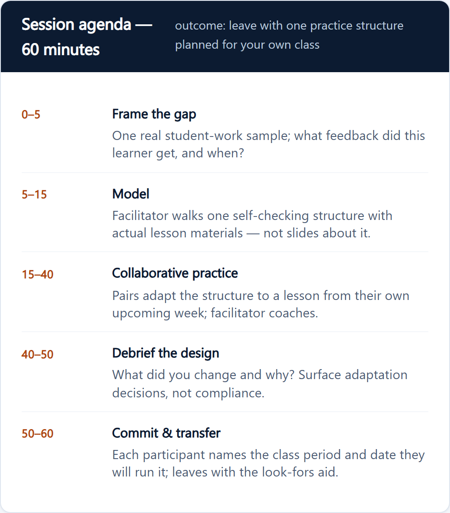

Workplace learning · New portfolio concept
Turn a missed handoff into a useful conversation.
A short manager scenario with three response choices, specific feedback, and a conversation job aid. Explore how the same feedback principles apply at work.
Instructional design · L&D · Edtech
Learners need more than a right-or-wrong result. I’m Robert Schmitz. I design practice, feedback, and job aids that explain what to do next.
Open to L&D and edtech roles · Remote preferred

Selected work
Workplace learning · New portfolio concept
A short manager scenario with three response choices, specific feedback, and a conversation job aid. Explore how the same feedback principles apply at work.
01 / eLearning · HTML prototype + storyboard
Algebra learners can lose track of which terms to divide. I wrote the interaction and per-choice feedback to make that error visible and explain the next move.
Solve for x, assuming m ≠ 0.
y = mx + b Subtract b from both sides, then divide the entire quantity y − b by m. The prompt assumes m ≠ 0, so this division is valid. This explains the selected answer; a choice alone does not show your reasoning. This divides only b by m. Both terms in y − b must be divided by m: x = (y − b) / m. Subtracting b from both sides gives y − b, not b − y. Reversing those terms changes the sign of the expression. Dividing first is valid, but every term must be divided by m: y/m = x + b/m. Then subtract b/m, not b.A working HTML sample from a 16-slide storyboard. Storyline assembly and SCORM delivery are pending. Inspect the storyboard →
02 / Adult learning · Representative session design
I structured a 60-minute educator PD session around modeled practice, peer adaptation, and a specific transfer commitment. Inspect the agenda and follow-up job aid.

Representative session design · agenda and transfer job aid
View the agenda & transfer job aid →Course materials drift at scale: each lesson reinvents structure, practice disconnects from objectives, and answer keys stop matching the pages learners actually use.
Curriculum architect and sole instructional designer — course architecture, evidence design, page systems, and the production pipeline spec.
One course spine spans 144 lessons across ten units. Student pages and teacher editions share a source to reduce answer-key mismatch risk. The paired pages show that design in one lesson; learning impact remains unmeasured.


Same lesson, same renderer — one in student mode, one in teacher-key mode. Select a page to inspect it.
Learners solve, match an answer to a color, and color the corresponding region. The reference scene provides a visual checking cue; the worked key supports review. Coloring is manual, so the picture does not automatically validate an answer or prevent guessing.
Approach: Start with the learning need, align practice to the objective, and write feedback around the likely error.
Current artifacts: A published Storyline Web course, HTML/CSS/JS interactions, Storyline storyboards, and Canvas/QTI assessment packages.
Credentials: M.Ed. Mathematics Education, UCF · UCF Professional Certification in Instructional Design. View full resume.
Open to instructional design and eLearning roles in L&D and edtech. Remote preferred.